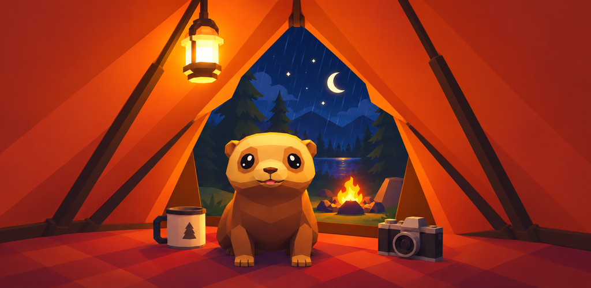

Cozy Tent
Una noche de lluvia, una tienda cálida y un hurón. A rainy night, a warm tent and a ferret.

Un sitio tranquilo
Cozy Tent no te pide nada. Te quedas dentro de una tienda en el bosque mientras llueve fuera, y haces lo que te apetezca.
Enciende la vela. Pon la cafetera y prepara café, té o chocolate. Busca una emisora en la radio. Lee un libro. Juega al ajedrez. Riega la planta y espera a que florezca.
Fuera, la noche sigue sola
Pasan ciervos y zorros. Salen luciérnagas. Cruzan estrellas fugaces y, de vez en cuando, aparece algo más raro: una aurora, un cometa, un arcoíris después de la tormenta. Apunta el telescopio a una constelación, hazle una foto y guárdala en tu álbum.
Un hurón vive contigo
Ponle nombre, dale de comer, acarícialo cuando se acerque. Sale por su cuenta y vuelve con cosas que encuentra. Cada tanto te roba algo de la tienda.
El cielo va por el reloj real
La luna y la hora siguen las de verdad, así que la tienda nunca es igual dos veces. Vuelve mañana y algo habrá cambiado. Sin cronómetros, sin puntuaciones y sin nada que recuperar al volver.
A quiet place
Cozy Tent asks nothing of you. You stay inside a tent in the forest while the rain falls outside, and you do whatever you feel like doing.
Light the candle. Put the kettle on and make coffee, tea or hot chocolate. Find a station on the radio. Read a book. Play chess. Water the plant and wait for it to bloom.
Outside, the night goes on by itself
Deer and foxes pass by. Fireflies come out. Shooting stars cross the sky and, once in a while, something rarer shows up: an aurora, a comet, a rainbow after a storm. Point the telescope at a constellation, take a photo of it and keep it in your album.
A ferret lives here with you
Give it a name, feed it, pet it when it comes over. It goes out on its own and brings back little things it finds, and every so often it steals something from the tent.
The sky follows the real clock
The moon and the hour are the real ones, so the tent is never the same twice. Come back tomorrow and something will have changed. No timers, no scores, nothing to catch up on when you return.